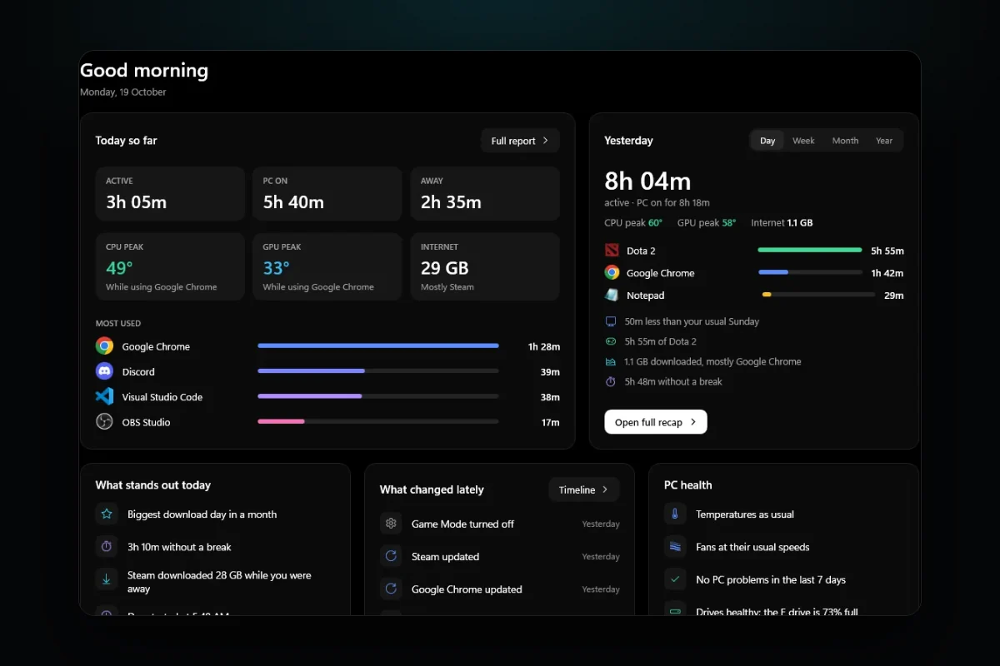
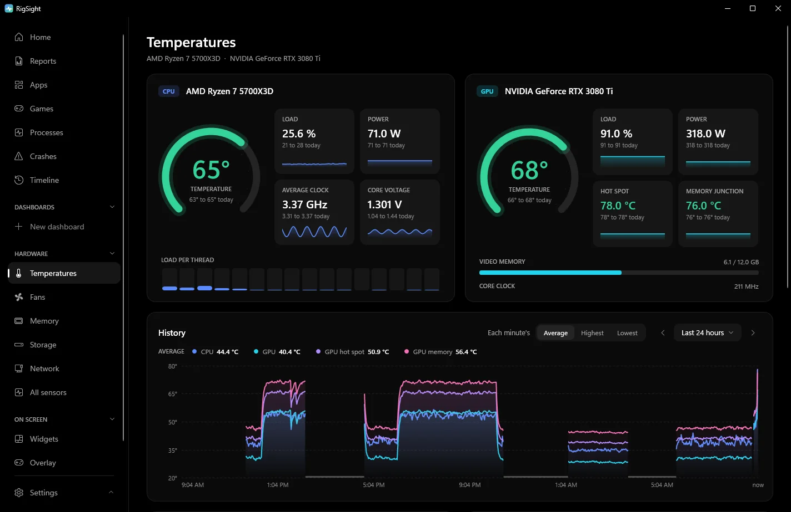

PC problems · Tools
Free PC monitoring software, and why I built an HWiNFO alternative
HWiNFO showed me every sensor but not what my PC did yesterday, so I built RigSight. Free PC monitoring software compared, from Task Manager and HWiNFO to MSI Afterburner, LibreHardwareMonitor and RigSight, and which one answers your question.

The short answer
For the most sensors, use HWiNFO. For GPU overclocking, fan curves and an FPS overlay, use MSI Afterburner with RivaTuner Statistics Server. For an open source sensor reader, LibreHardwareMonitor. For history, meaning what your PC did yesterday or last month, RigSight. Task Manager covers the basics.
Before RigSight existed, I used HWiNFO. It's a great tool, and it shows almost every sensor in a PC. What it didn't give me was the history I wanted. I could see what my PC was doing right now. I couldn't easily see what it did yesterday, or last week, or how this month compared with the one before. That gap is why I built RigSight. Search for free PC monitoring software, or an HWiNFO alternative, and you get the same few names every time. They aren't really rivals. Each one answers a different question about your PC.
How RigSight came out of HWiNFO
HWiNFO can keep a record. You switch on logging, it writes every sensor to a CSV file, and you open the file in a spreadsheet afterwards. That works when you know a problem is coming. It doesn't help with the evening you didn't plan for, like the game that stuttered at 11 PM or the PC that shut off while you were away. To look back at those, something has to have been recording all along.
So RigSight is two programs. A small recorder starts with Windows and writes readings all day. The window you open is only for looking back, and you can close it whenever you like. The full story of that first day is in Day one, and 25 versions before midnight.
What you get from that is history in plain words. Home says each day's CPU and GPU peak with the app that was in front at the time. The Temperatures page shows the CPU and GPU from the last 5 minutes up to the last 12 months, or any custom range. The Crashes page lists app crashes, blue screens, driver resets and sudden shut-offs with what most likely caused each one. The Timeline lists what changed on the PC, such as drivers and Windows updates, and whether things ran hotter or less stable afterwards. RigSight keeps the history as long as you choose in Settings, from 3 months up to forever.

It also keeps time per app, internet use per app, fan speeds over months, and each game's frame rate and 1% low for every play. Live readings can go in the taskbar on tiles, where a click shows that reading's last ten minutes. They can also go in desktop widgets and an in-game overlay. Everything can be exported as CSV. RigSight is free and open source.
It falls short in a few places too. It reads its sensors with LibreHardwareMonitor's library, so it shows fewer sensors than HWiNFO. It can't overclock, undervolt or control fans. Afterburner and your motherboard's software do that. FPS readings and the overlay in exclusive full screen games need RivaTuner Statistics Server. CPU temperature and power, motherboard fans, drive health and per-app internet use need RigSight to run with admin rights. It runs on Windows 10 and 11 only.
Why every monitoring tool answers a different question
Most sensor apps are built to show what is happening now, because that's what you need while you tune or test. Keeping everything is a different job. It needs a recorder that runs all the time without getting in the way, and a way to read months of numbers without a spreadsheet. So the tools split by question.
- Is my CPU or GPU too hot right now, and what is every sensor saying? Use HWiNFO.
- Can I overclock or undervolt my GPU, set a fan curve and see FPS in game? Use MSI Afterburner with RivaTuner Statistics Server.
- Do I want a small open source sensor reader? Use LibreHardwareMonitor.
- What did my PC do last night, last week or before it crashed? Use RigSight.
- Which app is eating CPU or memory right now? Task Manager is already on your PC.
Free PC monitoring software, tool by tool
Task Manager
It's built into Windows, so there's nothing to install. Press Ctrl + Shift + Esc and open Performance for graphs of CPU, memory, disk, network and GPU use. On many PCs with a dedicated GPU it also shows the GPU temperature, as long as the driver supports it. It doesn't show CPU temperature, fan speeds or voltages, and its graphs only cover the last minute. It's good for finding which app is busy, not for checking temperatures.
HWiNFO
HWiNFO reads more sensors than any other tool here. It reads nearly every sensor on the CPU, GPU, motherboard and drives, down to individual voltages, power limits and memory timings, and it is updated often for new hardware. It can log every sensor to a CSV file, raise alerts on any reading, show readings in the tray and on screen, and share its sensor data with other apps.
It is free for personal and non-commercial use. Commercial use needs the paid Pro licence. In the free version, the shared memory feature that lets other apps such as overlays read HWiNFO's sensors switches itself off after 12 hours, and you turn it on again by hand. It isn't open source.
Where it falls short is the sensor window, which is a long list of numbers that doesn't tell you which ones matter or what is normal for your PC. It only logs while you have logging switched on, and you read the CSV files yourself. If you are diagnosing a fault and know what you are looking for, nothing beats it.
MSI Afterburner and RivaTuner Statistics Server
MSI Afterburner is a free GPU tool that works with cards from other makers too, not only MSI. It is the usual choice for overclocking and undervolting a GPU, setting your own fan curve and watching GPU readings on a graph. Its in-game overlay comes from RivaTuner Statistics Server, a separate free tool that installs alongside it. RivaTuner also has a frame rate limiter that many players use on its own.
Its weak spot is that it is built around the GPU. CPU and motherboard readings are thinner than HWiNFO's, and the graphs show the recent past while the app is open. Unless you turn on its log file, it keeps no record of how a game ran last week, and it doesn't tell you what the numbers mean. MSI recommends downloading it only from msi.com or Guru3D, because fake copies exist.
If you only want an MSI Afterburner alternative to show FPS, you may not need Afterburner at all. RivaTuner can show a frame rate counter by itself. NVIDIA's and AMD's own apps have performance overlays, and the Xbox Game Bar, opened with Win + G, has a Performance widget with FPS.
LibreHardwareMonitor
LibreHardwareMonitor is free and open source, under the MPL 2.0 licence. It reads temperatures, fan speeds, voltages, load and clocks from motherboards, Intel and AMD processors, NVIDIA, AMD and Intel GPUs, drives and network cards. Some sensors need it to run as administrator. Its library is also used inside other apps, RigSight among them, which makes it the usual pick when someone wants an open source HWiNFO alternative.
Its weak spots are that it reads fewer sensors than HWiNFO, and it shows what is happening now unless you turn on Log Sensors, which saves the readings to a file. Get it from the project's GitHub page. The project warns that librehardwaremonitor.com is not its site.
Side by side
| Tool | Best at | Keeps history | Open source |
|---|---|---|---|
| Task Manager | Which app is busy right now | Last minute only | No |
| HWiNFO | Every sensor, alerts, CSV logs | While logging is on | No |
| MSI Afterburner with RivaTuner | GPU tuning, fan curves, FPS overlay | Recent graph while open, optional log file | No |
| LibreHardwareMonitor | Open source sensor readings | While Log Sensors is on | Yes, MPL 2.0 |
| RigSight | History in plain words for heat, crashes, changes, app time and internet | Yes, all day, kept as long as you choose | Yes, MIT |
A common setup is RigSight running all the time for the history, with HWiNFO or Afterburner opened when you need a closer look or want to tune something. That's how I still use HWiNFO today.
Pick the tool for the question you have right now. If it's about heat, see how to check your GPU temperature history. If your PC crashed and you don't know why, start with how to find out why your PC crashed.
Questions people ask
What is the best free PC monitoring software?
It depends on the question. HWiNFO reads the most sensors, MSI Afterburner is the usual choice for GPU tuning and an in-game overlay, and RigSight keeps a history so you can look back. Many people run one of each.
Is there an open source HWiNFO alternative?
LibreHardwareMonitor is open source under the MPL 2.0 licence and reads CPU, GPU, motherboard, drive and network sensors. RigSight is open source under the MIT licence and reads its sensors with LibreHardwareMonitor's library. Neither reads as many sensors as HWiNFO.
What is an MSI Afterburner alternative to show FPS?
RivaTuner Statistics Server, which installs with Afterburner, can show a frame rate overlay on its own. NVIDIA's and AMD's own apps have performance overlays, and the Xbox Game Bar has a Performance widget. RigSight shows FPS in its overlay and records it per game, reading it from RivaTuner.
Is HWiNFO free?
Yes, for personal and non-commercial use. Commercial use needs the paid Pro licence. The free version's shared memory feature, which other apps use to read HWiNFO's sensors, switches off after 12 hours until you turn it on again.
Can I run more than one monitoring program at once?
Usually yes. Many people keep one running in the background and open another when they need a closer look. If readings look odd or a tool reports conflicts, close one of them and compare.